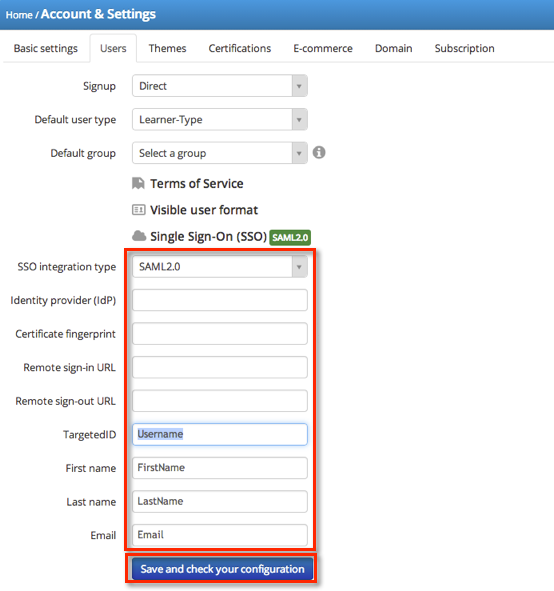
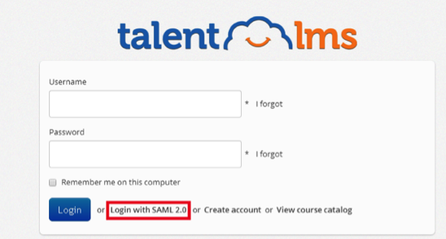

- Sign in to Talentlms at https://<your Talentlms domain>.talentlms/com/account/system, where <your Talentlms domain> is the domain you have already set up.
- Select the green Go to admin button.
- Select Account & Settings and then, select Users on the menu that appears.
- Select Single Sign-On (SSO) on the Users screen that opens. The screen shown below opens.

- Select SAML2.0 for the SSO integration type, as shown above.
-
Enter the following Identity provider (IdP), as shown above.
Sign in to the Okta Admin app to generate this variable.
-
Enter the following Certificate fingerprint, as shown above.
Sign in to the Okta Admin app to generate this variable.
-
Enter the following Remote sign-in URL, as shown above.
Sign in to the Okta Admin app to generate this variable.
-
Enter the following Remote sign-out URL, as shown above.
Sign in to the Okta Admin app to generate this variable.
-
TargetedID, First name, Last Name, and Email should contain the values Username, FirstName, LastName, and Email, as shown in step 4.
-
Select Save and check your configuration, as shown above.
- Talentlms only supports an SP-initiated flow. For the convenience of your end users, Okta recommends that you hide the Talentlms app and set up a Bookmark app with the Talentlms logo. For instructions on setting up a Bookmark app and hiding the original app, see Simulating an IDP-initiated Flow with the Bookmark App.
The link for the SP-initiated flow is use https://<your Talentlms domain>.talentlms.com/index/ssologin/service:saml, where <your Talentlms domain> is the domain you have already set up.
SAML 2.0 access is also available from the Login with SAML 2.0 link on the Talentlms page for your domain at https://<your Talentlms domain>.talentlms.com, as shown below.

Note: Talentlms supports Just in Time (JIT) provisioning.